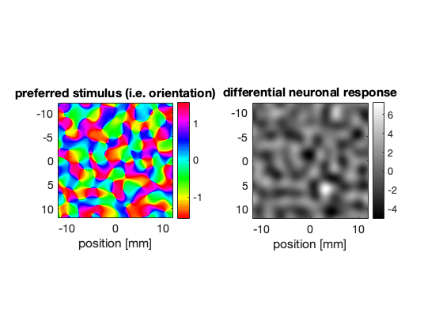
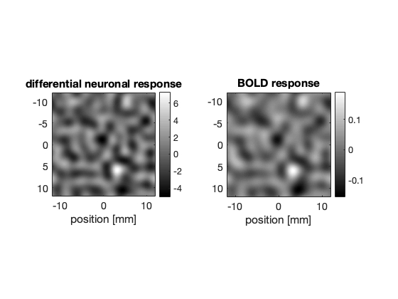
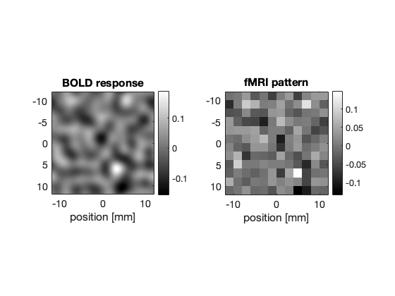
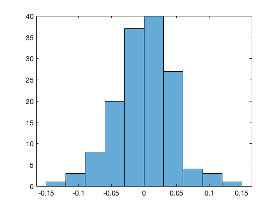
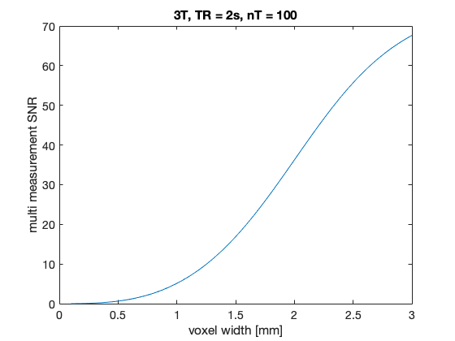
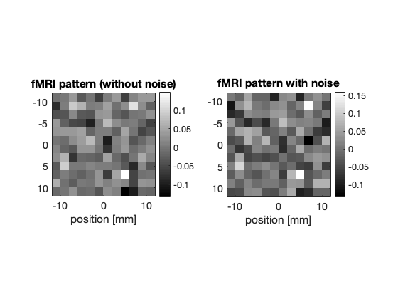
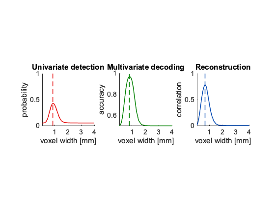

Demo of columnsfmri
Contents
Simulation and optimization of fMRI of cortical columns
Import model implementation from columnsfmri.py and other useful modules.
close all; set(0,'DefaultAxesFontSize',14);
A tour of the inner workings of the model
Inititialize simulation using a 512 x 512 grid on an area of 24 x 24 mm.
N = 512; L = 24; sim = setupsim(N,L);
Simulate a column pattern by filtering Gaussian white noise. Rho is the main pattern frequency, delta specifies the amount of irregularity.
gwn = sim_gwnoise(sim); rho = 0.2; deltaRelative = 1; [columnPattern, prefMap, ~] = ... sim_columnPattern(sim,rho,deltaRelative,gwn); subplot(1,2,1); sim_plotPattern(sim,prefMap,'preferred stimulus (i.e. orientation)','hsv'); subplot(1,2,2); sim_plotPattern(sim,columnPattern,'differential neuronal response');
Simulate a differential spatial BOLD response with a FWHM of 2 mm, and a corresponding single condition average response amplitude of 5%.
fwhm = 2; beta = 0.05; [boldPattern,~,~] = sim_bold(sim,fwhm,beta,columnPattern); subplot(1,2,1); sim_plotPattern(sim,columnPattern,'differential neuronal response'); subplot(1,2,2); sim_plotPattern(sim,boldPattern,'BOLD response');
Simulate MRI sampling using a voxel width of 2 mm.
w = 2; downFactor = sim.dx/w; mriPattern = sim_mri(sim,downFactor,boldPattern); subplot(1,2,1); sim_plotPattern(sim,boldPattern,'BOLD response'); subplot(1,2,2); sim_plotPattern(sim,mriPattern,'fMRI pattern');
The amount of functional contrast c can be quantified as the standard deviation of the imaged responses (contrast range).
subplot(1,1,1); histogram(mriPattern(:)); c = std(mriPattern(:))
c =
0.0420
 Simulate the noise level as a function of voxel width.
w = linspace(0.1,3,100); V = w.^3; TR = 2; nT = 1; differentialFlag = true; noiseType = '3T'; SNR = 1./... noiseModel(V,noiseType,TR,nT,differentialFlag); plot(w,SNR); xlabel('voxel width [mm]'); ylabel('multi measurement SNR'); title('3T, TR = 2s, nT = 100');
SNR for a voxel width of 2 mm:
w = 2; V = w^3; SNR = 1./noiseModel(V,noiseType,TR,nT,differentialFlag)
SNR = 36.2365
Contrast to noise ratio = c * SNR:
CNR = c * SNR
CNR =
1.5236
Calculate detection probability from CNR and number of voxels.
CNR = 1 nVoxels = 10 p = detectionProbability(CNR,nVoxels)
CNR =
1
nVoxels =
10
p =
0.5176
Add noise to MRI pattern:
mriPlusNoisePattern = mriPattern + ... (1/SNR) * randn(size(mriPattern)); subplot(1,2,1); sim_plotPattern(sim,mriPattern,'fMRI pattern (without noise)'); subplot(1,2,2); sim_plotPattern(sim,mriPlusNoisePattern,'fMRI pattern with noise');
Calculate the correlation between the original and the (interpolated) imaged pattern.
R = patternCorrelation(sim,columnPattern,mriPlusNoisePattern)
R =
0.7058
Run optimization simulation
Set standard parameters for optimization simulation.
parameters = setParameters()
parameters =
struct with fields:
randomNumberSeed: 23
nTrials: 32
N: 512
L: 24
downFactors: [1×41 double]
rho: 0.6250
delta: 0.5000
fwhm: 1.0200
beta: 0.0350
sliceThickness: 2.5000
AFlat: 87
TR: 2
nT: 1000
noiseType: '7T'
Run optimization simulation:
results = simulatefMRIOfColumnPatterns(parameters);
Summarize results:
printResults(results)
optimized quantity | optimal value | optimal voxel width -----------------------------------+---------------+-------------------- univariate detection probability | 0.43 | 0.86 mm multivariate detection probability | 1.00 | 0.80 mm decoding probability - 2 classes | 1.00 | 0.80 mm decoding accuracy - 2 classes | 0.97 | 0.80 mm decoding probability - 4 classes | 1.00 | 0.80 mm decoding accuracy - 4 classes | 0.70 | 0.80 mm decoding probability - 8 classes | 1.00 | 0.80 mm decoding accuracy - 8 classes | 0.32 | 0.80 mm pattern correlation | 0.78 | 0.67 mm
Plot results:
displayFigureA(results);